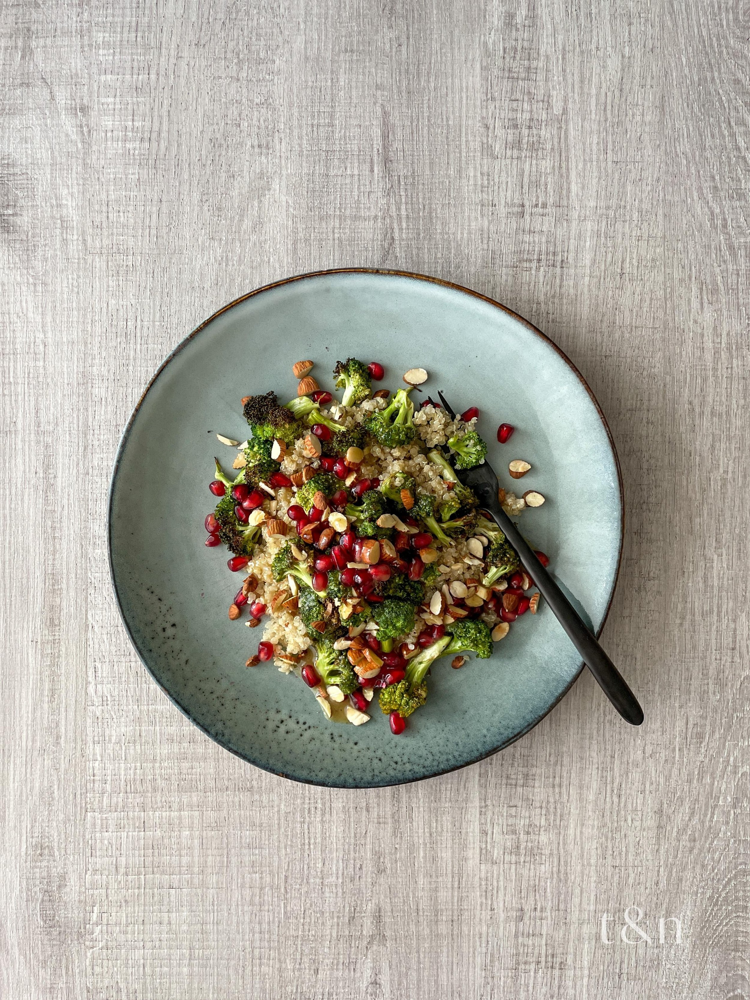

Quinoa Salad with Broccoli, Nuts, and Pomegranate

Quinoa Salad with Broccoli, Nuts, and Pomegranate
A lovely quinoa dish with just the right mix of fruit and vegetables. Serve this as a side or in your packed lunch.
Ingredients
- 2 cups water
- 1 cup quinoa
- 1 cube vegetable bouillon
- 2 cups broccoli florets
- ½ cup finely diced red onion
- ½ cup finely chopped Brazil nuts
- 1 large pomegranate, seeded
- 2 tablespoons olive oil, or to taste
- 1 tablespoon balsamic vinegar, or to taste
- 1 teaspoon honey, or to taste
- salt and ground black pepper to taste
Steps
- Combine water, quinoa, and vegetable bouillon in a saucepan. Bring to a boil over medium-high heat. Reduce heat, cover, and simmer until quinoa has doubled in size and looks like transparent little pearls, 25 to 30 minutes.
- Meanwhile, cook broccoli in boiling water until tender, 5 to 10 minutes. Drain and rinse under cold water.
- Drain and rinse quinoa under cold water. Combine quinoa, broccoli, red onion, Brazil nuts, and pomegranate seeds in a large bowl. Drizzle with olive oil, vinegar, and honey and season with salt and pepper.